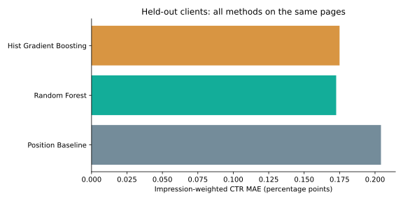
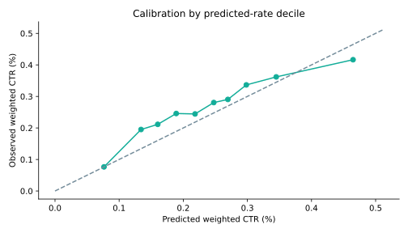
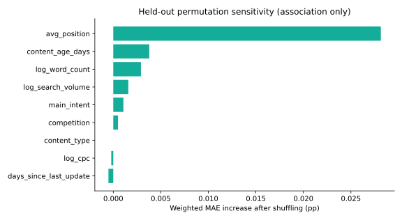
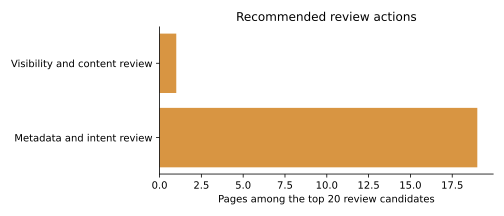

Abstract
This study asks which visible pages merit a click-capture review after accounting for observed search position. Using the FlyRank anonymized starter snapshot, we built a position-band reference and two regression models on 16,726 eligible pages, with separate client groups for training, validation, and testing. Random Forest was selected on validation error and reduced impression-weighted CTR MAE from 0.2042 to 0.1726 percentage points on 3,913 pages from six held-out clients, a 15.5% reduction. The resulting ranked queue identifies reference click shortfalls and assigns reason-coded human review actions, while calibration and subgroup checks expose where the reference can be wrong. These are observed decision-support recommendations from one cross-sectional snapshot, with no claim of future performance, recoverable clicks, or causal refresh benefit.
Introduction / Problem statement
Search visibility can exist without proportionate click capture. A content team needs an explainable queue of pages to inspect, rather than treating every low CTR value as a title or metadata defect. The decision supported here is which visible pages deserve a human click-capture review first.
The study compares a transparent position-band reference with Random Forest and histogram gradient boosting. A richer method earns a place only by improving error on clients unseen during fitting. The selected reference is then used to rank shortfalls; it does not determine whether a page should automatically be refreshed or deleted.
Data
We used the bundled content_refresh_anonymized.csv teaching release from the pinned source commit, not the gated warehouse. The lane guide permits this starter snapshot for the CTR / Engagement lane. One row represents one pseudonymized content item with trailing 90-day aggregates.
| Check | Measured result |
|---|---|
| Raw grain / scope | 30,000 pages × 44 fields, 32 pseudonymized clients; zero duplicate content IDs |
| Eligibility | At least 500 impressions, positive measured average position, valid click counts |
| Exclusions | 13,274 pages below the volume floor; zero additional position exclusions after that floor |
| Eligible panel | 16,726 pages across 28 clients |
| Position sentinel | 1,205 raw rows have position 0, which means unavailable, not rank zero |
| Window / dates | Trailing 90-day snapshot; absolute export and end dates are absent. The warehouse’s calendar dates are not assigned to this slice. |
| Missingness | Word count missing for 28.393% of eligible pages; keyword context is also systematically missing in some content types |
CTR is recalculated from counts to avoid rounded stored rates. Percentage values use the 0–100 scale. IDs are used only for grain checks, splitting, and local mapping; no identifiers or raw exports are added to the public paper.
Methodology
Observed label and allowable inputs
This is a contemporaneous association task. Features are average position, logged word count, age, days since update, logged search-volume estimate, competition, logged CPC, content type, and broad intent. CTR, clicks, trends, engagement outcomes, IDs, and target-derived fields are excluded. Missing numerical inputs use training-only median imputation plus missingness flags; categories use training-only encoding with an unknown fallback.
Baseline and fitted models
The baseline pools clicks and impressions within position bands 1–3, 4–10, 11–20, 21–50, and >50, using 500 pseudo-impressions at the training-wide CTR for smoothing. Random Forest uses 200 trees, depth 12, and minimum leaf size 30. Gradient boosting uses 180 iterations, 15 leaves, minimum leaf size 40, learning rate 0.06, and L2 regularization 5. Both models use square-root impression weights during training; evaluation uses actual impression weights.
Validation and leakage controls
Client groups are shuffled deterministically (seed 42): 8,483 pages / 17 clients for initial fitting, 4,330 pages / 5 clients for validation, and 3,913 pages / 6 sealed test clients. Random Forest is selected by validation impression-weighted CTR MAE before any test comparison, then refit on the 22 development clients. All methods are tested on exactly the same pages. Client and content overlap are zero, with no row-random fallback.
Weighted MAE is Σ impressions × |predicted CTR − observed CTR| / Σ impressions, in percentage points (pp). We also report page-average MAE, RMSE, calibration, volume sensitivity, and subgroup errors. The recommendation gap is impressions × max(reference CTR − observed CTR, 0) / 100, ranked descending; it is a reference shortfall, not an estimate of achievable gains.
Results
| Method | Validation weighted MAE (pp) | Test weighted MAE (pp) | Test page MAE (pp) | Test RMSE (pp) |
|---|---|---|---|---|
| Position Baseline | 0.2102 | 0.2042 | 0.2013 | 0.2870 |
| Random Forest | 0.2056 | 0.1726 | 0.1729 | 0.2742 |
| Hist Gradient Boosting | 0.2079 | 0.1750 | 0.1711 | 0.2763 |
Random Forest lowers the primary test error by 15.5% relative to the position-band baseline. The validation advantage is smaller, and the baseline has lower page-average validation MAE than either fitted model. Gradient boosting has the lowest page-average test MAE, while Random Forest has lower impression-weighted error; the objective determines the preferred method.



The selected model’s weighted mean predicted CTR is 0.264%, versus an observed 0.285%. That bias is a reason to inspect gaps critically. A 2,000-replicate client bootstrap gives a selected-minus-baseline weighted MAE difference of −0.0316 pp, with an exploratory 95% interval [−0.0450, −0.0215] pp. Only six independent test clients support this estimate.
Subgroup errors and volume sensitivity
| Subgroup | Pages | Baseline weighted MAE | Selected weighted MAE |
|---|---|---|---|
| position_band: 1–3 | 67 | 0.3239 | 0.1783 |
| position_band: 4–10 | 1,477 | 0.2098 | 0.1987 |
| position_band: 11–20 | 1,209 | 0.2192 | 0.1612 |
| position_band: 21–50 | 1,096 | 0.1140 | 0.0979 |
| position_band: >50 | 64 | 0.0968 | 0.1047 |
| content_type: comparison article | 70 | 0.3080 | 0.2939 |
| content_type: keyword article | 3,828 | 0.2033 | 0.1716 |
| Minimum impressions | Test pages | Selected weighted MAE (pp) |
|---|---|---|
| 500 | 3,913 | 0.1726 |
| 1,000 | 3,145 | 0.1724 |
| 3,000 | 1,758 | 0.1737 |
Three derived error diagnostics
Individual-page errors can reflect unmeasured query mix, brand demand, SERP features, or snippet intent. These rounded diagnostics expose no client or page identifiers.
| Case | Position band | Observed CTR (%) | Predicted CTR (%) |
|---|---|---|---|
| Diagnostic A | 11–20 | 5.426 | 0.275 |
| Diagnostic B | 1–3 | 5.194 | 0.492 |
| Diagnostic C | 4–10 | 2.541 | 0.274 |
Limitations & honest framing
- One starter snapshot, not the full warehouse, and no verified calendar endpoints: this does not test future CTR or change through time.
- Grouping limits same-client leakage, but only six test clients remain; client selection and traffic mix may affect the measured advantage.
- Query text, brand demand, device mix, SERP features, and title quality are unavailable. Low CTR can be normal for intent or the search result format.
- Metadata missingness is systematic. Word count and age associations cannot support causal editing prescriptions.
- The ranking has no experimentally observed action-success label. Its reference gap does not measure recoverable clicks; deleting or refreshing content on the score alone is inappropriate.
Ranked recommendations
The top 20 held-out review candidates are ordered by positive reference gap. Generic review IDs map to pseudonymized content items in the locally generated, gitignored queue. “Evidence level” describes measurement volume, not statistical confidence or probability of success.

| Rank | Candidate | Position band | Reference gap | Review action | Reason codes |
|---|---|---|---|---|---|
| 01 | Review 01 | 4–10 | 1,403.3 | Metadata and intent reviewHigher measurement volume | below_grouped_ctr_reference visible_position_band word_count_missing recent_update_context |
| 02 | Review 02 | 1–3 | 910.5 | Metadata and intent reviewHigher measurement volume | below_grouped_ctr_reference visible_position_band content_depth_context recent_update_context |
| 03 | Review 03 | 1–3 | 465.6 | Metadata and intent reviewHigher measurement volume | below_grouped_ctr_reference visible_position_band content_depth_context recent_update_context |
| 04 | Review 04 | 4–10 | 366.5 | Metadata and intent reviewHigher measurement volume | below_grouped_ctr_reference visible_position_band word_count_missing recent_update_context |
| 05 | Review 05 | 4–10 | 339.7 | Metadata and intent reviewHigher measurement volume | below_grouped_ctr_reference visible_position_band content_depth_context recent_update_context |
| 06 | Review 06 | 4–10 | 312.3 | Metadata and intent reviewHigher measurement volume | below_grouped_ctr_reference visible_position_band content_depth_context recent_update_context |
| 07 | Review 07 | 1–3 | 276.1 | Metadata and intent reviewHigher measurement volume | below_grouped_ctr_reference visible_position_band content_depth_context recent_update_context |
| 08 | Review 08 | 4–10 | 271.7 | Metadata and intent reviewHigher measurement volume | below_grouped_ctr_reference visible_position_band content_depth_context recent_update_context |
| 09 | Review 09 | 21–50 | 231.8 | Visibility and content reviewHigher measurement volume | below_grouped_ctr_reference outside_page_two content_depth_context recent_update_context |
| 10 | Review 10 | 4–10 | 230.7 | Metadata and intent reviewLimited click evidence | below_grouped_ctr_reference visible_position_band content_depth_context recent_update_context |
| 11 | Review 11 | 4–10 | 216.8 | Metadata and intent reviewLimited click evidence | below_grouped_ctr_reference visible_position_band content_depth_context recent_update_context |
| 12 | Review 12 | 4–10 | 211.6 | Metadata and intent reviewHigher measurement volume | below_grouped_ctr_reference visible_position_band content_depth_context recent_update_context |
| 13 | Review 13 | 4–10 | 191.6 | Metadata and intent reviewHigher measurement volume | below_grouped_ctr_reference visible_position_band word_count_missing recent_update_context |
| 14 | Review 14 | 4–10 | 187.7 | Metadata and intent reviewHigher measurement volume | below_grouped_ctr_reference visible_position_band content_depth_context recent_update_context |
| 15 | Review 15 | 4–10 | 186.9 | Metadata and intent reviewLimited click evidence | below_grouped_ctr_reference visible_position_band content_depth_context recent_update_context |
| 16 | Review 16 | 4–10 | 184.2 | Metadata and intent reviewHigher measurement volume | below_grouped_ctr_reference visible_position_band content_depth_context recent_update_context |
| 17 | Review 17 | 4–10 | 167.0 | Metadata and intent reviewHigher measurement volume | below_grouped_ctr_reference visible_position_band content_depth_context recent_update_context |
| 18 | Review 18 | 4–10 | 165.0 | Metadata and intent reviewHigher measurement volume | below_grouped_ctr_reference visible_position_band word_count_missing recent_update_context |
| 19 | Review 19 | 4–10 | 161.3 | Metadata and intent reviewHigher measurement volume | below_grouped_ctr_reference visible_position_band word_count_missing recent_update_context |
| 20 | Review 20 | 4–10 | 157.1 | Metadata and intent reviewHigher measurement volume | below_grouped_ctr_reference visible_position_band word_count_missing recent_update_context |
Action playbook
- Visible positions (≤20): inspect metadata, snippet/query intent alignment, and current SERP presentation before editing.
- Outside page two: inspect visibility, content coverage, and demand context; metadata alone may not address the issue.
- Missing measurements: verify metadata capture before interpreting content-depth reasons; age and freshness tags are context.
- After an approved change: establish an observation window and comparison design. Monitor, and do not attribute later gains to the change without a valid causal design.
Reproducibility
git clone https://github.com/Catacombs666/ML_int-.git cd ML_int- python -m pip install -r work/requirements.txt python work/scripts/ctr_capstone.py python work/scripts/build_deliverables.py python work/scripts/run_notebooks.py
The reference scripts under scripts/ remain untouched. Work dependencies are pinned; versions in this run are Python 3.12.14, pandas 2.2.3, NumPy 2.3.5, and scikit-learn 1.8.0. The input SHA-256 is c43bdac4eccfa17fcd8a33974fe36f2c998c03a3ae3af8d80cf712abab5d6396. The derived local queue is work/.cache/review_queue.csv and is never committed. No credential is required for the permitted public starter snapshot.
Acknowledgments & data credit
Built on the FlyRank ML Internship dataset — https://flyrank.ai. This capstone uses FlyRank’s anonymized starter slice and the internship’s data dictionary and lane guidance. The repository’s original starter pipeline is retained as supplied. AI-assisted implementation was checked against executed code and measured outputs; editorial and submission review remains the author’s responsibility.